|
|
|
Let us consider a 3D even, finite and invariant spatial distribution of an attribute, such as, for instance, the mass density 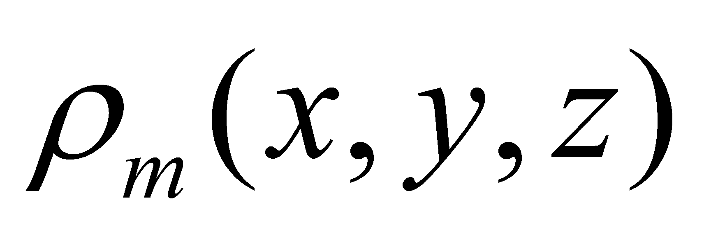. In relation to an external reference X,Y,Z, each DPi of the distribution (the primary distribution element) has the position vector 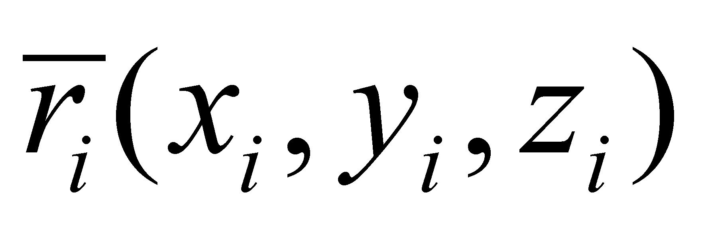, according to the figure X.20.1.
Fig. X.20.1
The common component of the set of position vectors is also a position vector which shall be written as 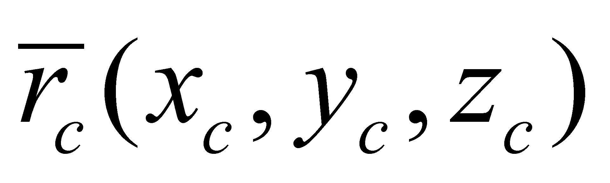. In relation to this unique and invariant (as internal position) vector of the distribution, each position vector has a differential (specific) component 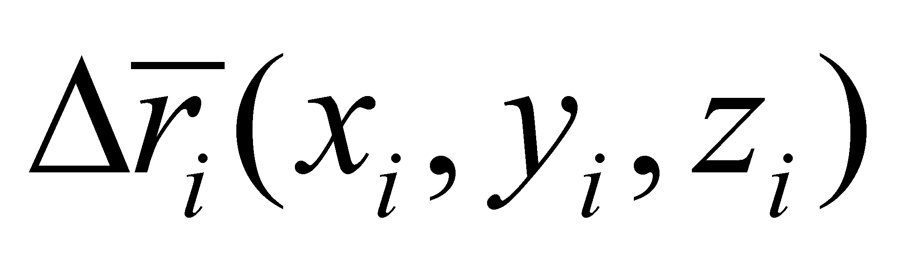. If by convention, the following rule is settled for the set of the distribution elements: the common component of the set of specific components is null (nonexistent), then, this condition transposed in the example shown in the figure X.20.1 becomes:
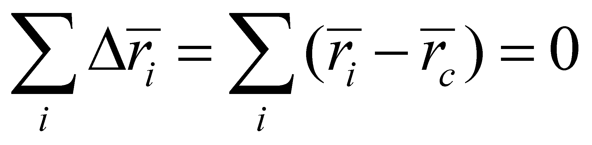 (X.20.1)
which if it is written by components, it means:
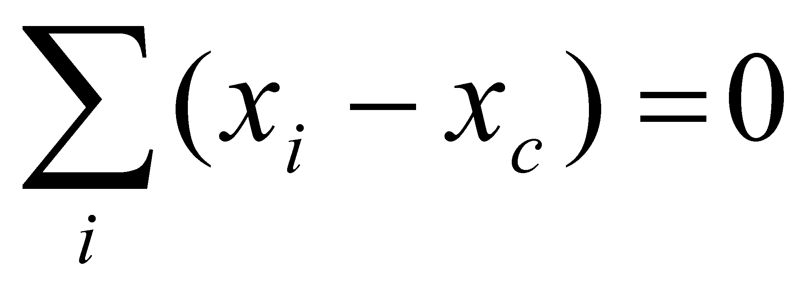, 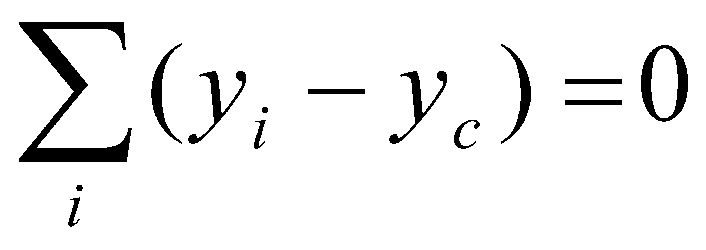, 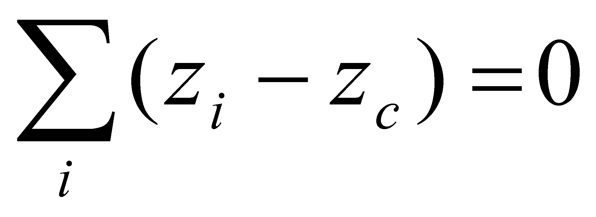 (X.20.2)
If we presume that 3D distribution contains n elements, namely, i=[1,n], the relations X.20.2 may be also written as:
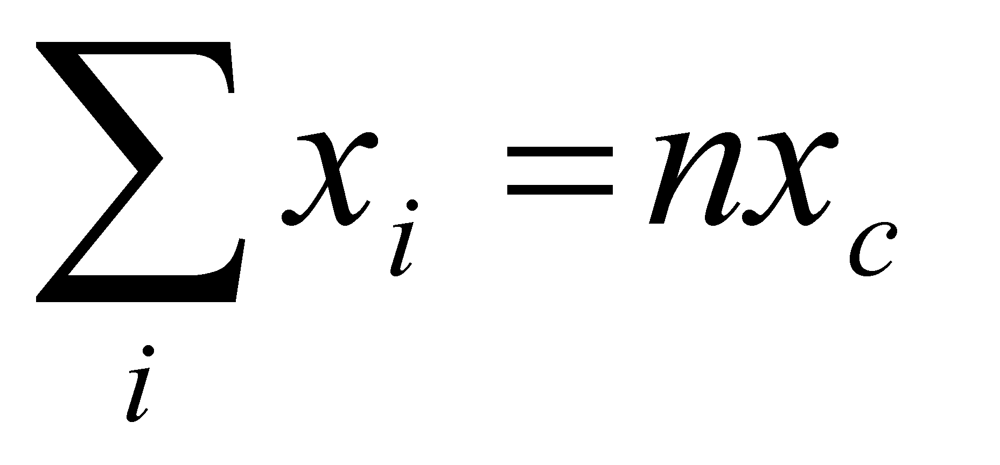, 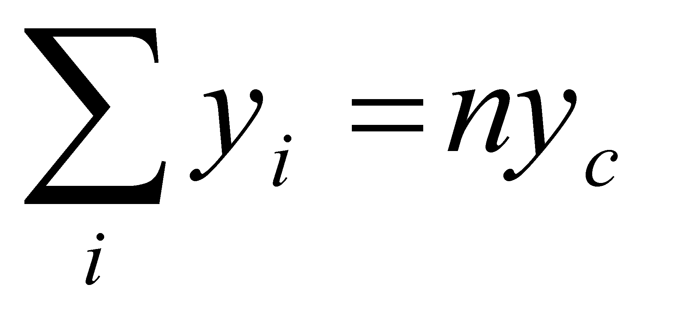, (X.20.3)
hence the result is:
, 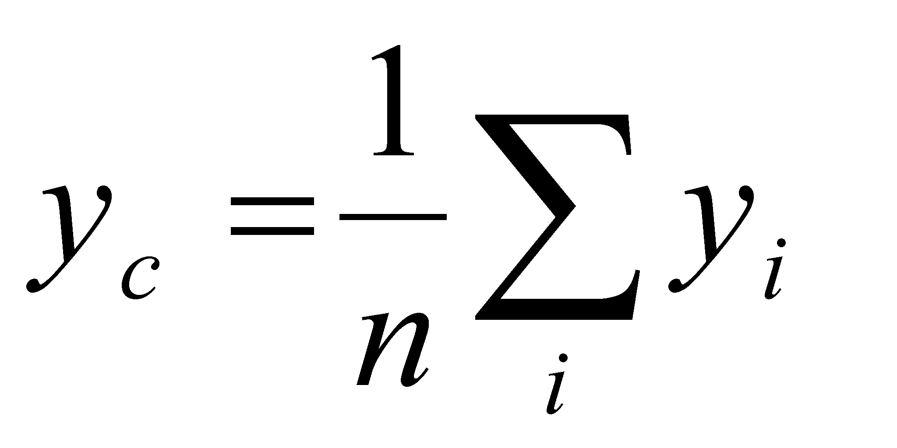, 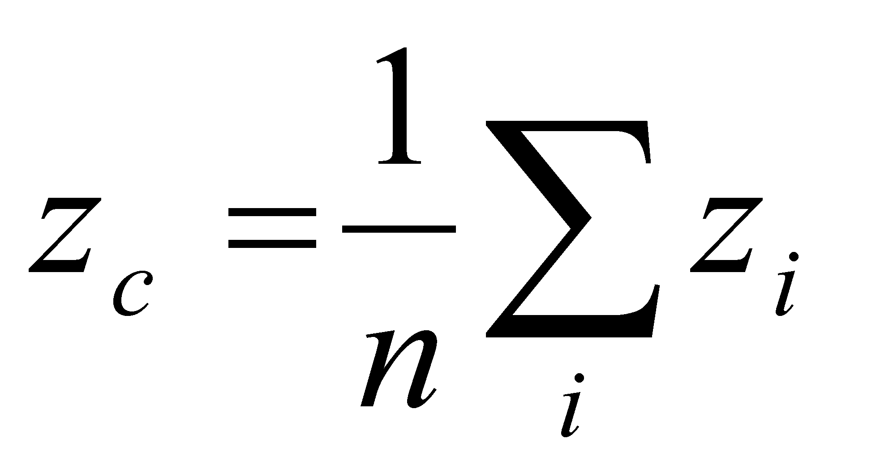 (X.20.4)
the notorious relations which define the coordinates of the mass-center (or the weight-center) of a material object with even distribution of the mass density.
This means that the center’s position represents the common component of the spatial positions of the distribution elements set, that is an abstract object which represents at the same time an internal natural reference T of that distribution (against which the specific components of each element are being estimated). The relations X.20.4 are applicable for any discrete distribution, such as, for instance, the finite sets of numerical values; in this case, the common component (the natural internal reference) of these sets is the mean arithmetical value. Also, the relations X.20.4 justify the relation X.20.1 (which was used before its justification), fact which shows that the value of the common component is null, only if the sum of its individual (specific) values is null (assertion applicable for the quantitative attributes).
Comment X.20.1: It must be emphasized that both the common component of a set of objects and the other reference values, either natural or artificial, are abstract objects without any correspondence to the objects of the set used for their determination (they are external references to these objects). If we are talking about the set of vectors from the figure X.20.1, 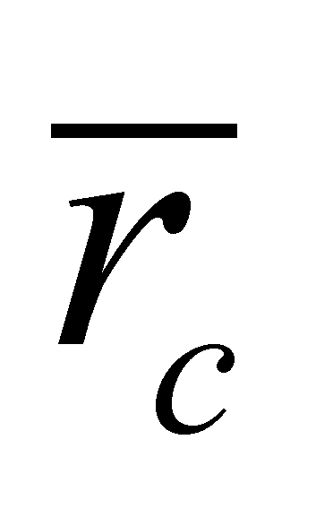is a position vector belonging to an imaginary point (there is no element of the distribution placed on that position, unless it was randomly arranged like that).
Copyright © 2006-2011 Aurel Rusu. All rights reserved.